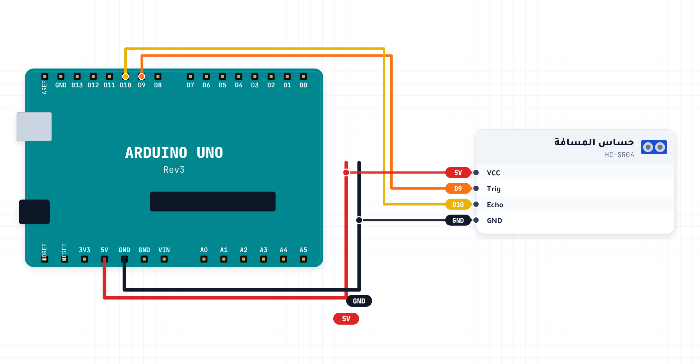

▶فيديو الشرح
نقيس المسافة بالسنتيمتر باستعمال موجات فوق صوتية، تماماً مثل حساسات ركن السيارات.
1المكونات
ARDUINO UNOboardحساس المسافةHC-SR04أسلاك توصيلJumper Wiresلوحة تجاربBreadboard
2مخطط التوصيل

اضغط على المخطط لتكبيره · نسخة SVG عالية الدقة
| القطعة | الطرف | يوصل إلى |
|---|---|---|
| حساس المسافة | VCC | 5V |
| حساس المسافة | Trig | D9 |
| حساس المسافة | Echo | D10 |
| حساس المسافة | GND | GND |
3الكود
لا يحتاج هذا المشروع إلى أي مكتبة إضافية.
/* المشروع 6: جهاز قياس المسافات (Ultrasonic HC-SR04) كتاب: 38 مشروع في شهر — لؤي النصري (@robotlouay) التوصيل: VCC → 5V Trig → Pin 9 Echo → Pin 10 GND → GND افتح Serial Monitor على سرعة 9600 لرؤية المسافة. */ const int TRIG_PIN = 9; const int ECHO_PIN = 10; void setup() { Serial.begin(9600); pinMode(TRIG_PIN, OUTPUT); pinMode(ECHO_PIN, INPUT); } float readDistanceCm() { // نبضة 10 ميكروثانية على Trig digitalWrite(TRIG_PIN, LOW); delayMicroseconds(2); digitalWrite(TRIG_PIN, HIGH); delayMicroseconds(10); digitalWrite(TRIG_PIN, LOW); // زمن عودة الصدى (مع مهلة 30ms ≈ 5 أمتار) long duration = pulseIn(ECHO_PIN, HIGH, 30000); if (duration == 0) return -1; // لا يوجد صدى (خارج المدى) return duration * 0.034 / 2; // سرعة الصوت 0.034 سم/µs ذهاباً وإياباً } void loop() { float d = readDistanceCm(); if (d < 0) { Serial.println("Out of range"); } else { Serial.print("Distance: "); Serial.print(d, 1); Serial.println(" cm"); } delay(300); }
4كيف يعمل؟
- نبضة 10µs على Trig تطلق الموجة
- pulseIn() تقيس زمن عودة الصدى على Echo
- المسافة = الزمن × 0.034 ÷ 2
- النتيجة تظهر في Serial Monitor
⚠ قبل توصيل الكهرباء: راجع كل سلك مع الجدول أعلاه، وتأكد من عدم وجود تماس بين 5V و GND. اختر اللوحة والمنفذ الصحيحين من قائمة Tools في Arduino IDE.